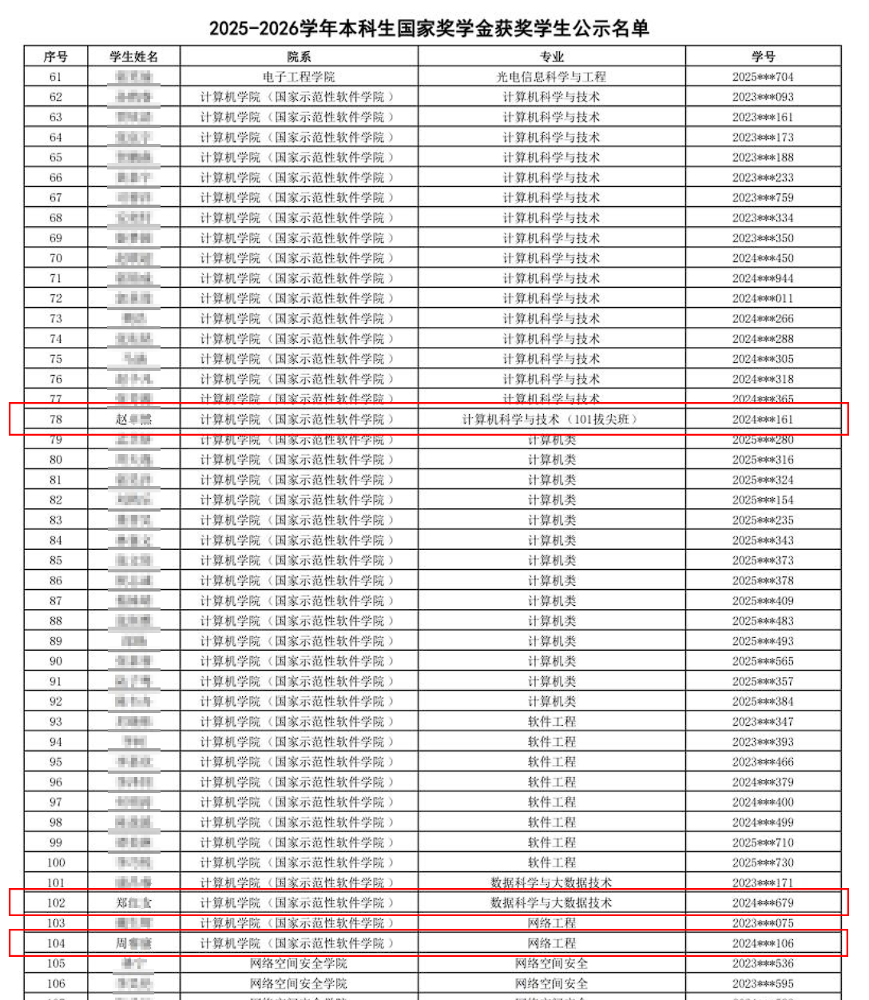

Why I was awarded second-class scholarship
At Beijing University of Posts and Telecommunications, scholarship selection is based primarily on comprehensive performance, with course grades as a secondary criterion. Both my comprehensive performance and course grades rank first in my major, and I did indeed participate in the defense and selection process for the National Scholarship (which typically requires both comprehensive performance and course grades to be in the top 10%, and I met both requirements).
However, after discussion by the college's evaluation committee, they determined that because the number of students in my major was too small, the number of award recipients calculated according to the original fixed proportion was less than one person ⓘ, so they did not allow me to be awarded the title of National Scholarship. By comparison, every major in the School of Computer Science has at least one National Scholarship quota , and it does not require both comprehensive performance and course grades to be ranked first. My First-Class Scholarship was also rejected for the same reason.
Therefore, I could only regrettably receive the Second-Class Scholarship.
为何本人只获评二等奖学金
在北京邮电大学，奖学金评选以综合成绩为主、课程成绩为辅。本人的综合成绩和课程成绩都位于专业第一的位置， 并且的确参加了国家奖学金的答辩和评选（这通常要求综合成绩和课程成绩都位列前10%，本人都达到了要求）。
然而，在学院的评定委员会讨论后，他们认为由于本专业人数过少，按照原固定比例评选奖学金后，得奖人数不满一人ⓘ，故不允许授予本人国家奖学金称号。 作为对比，计算机学院任何一个专业都至少拥有一个国家奖学金名额，且并不要求综合成绩和课程成绩都是第一名。而本人的一等奖学金也以同样理由被拒绝。
因此，本人只能十分遗憾地获评二等奖学金。
 以上是2025-2026学年度北邮国家奖学金公示，可以看到计算机学院共43个名额，具体分配如下： National Scholarship and First-Class Scholarship are awarded to no more than 3% of the
eligible students, see
for references 国家奖学金和一等奖学金将被颁发给不超过3%参评学生，详情参见
2025 - 2026学年度国家奖学金（北邮计算机）部分公示
References
参考资料